Chun-Yu, Tsai
Senior Software Engineer
Core Competency: Senior Software Engineer focused on Engineering Productivity and Automation. I specialize in fixing organizational bottlenecks by building scalable internal platforms that actually work for developers.
90%
Manual-to-Digital Speedup
5+
Internal Platforms Built
5+
Internal Dept Services Sync
Core Competencies: Test Automation, API Integration & Design, Full-Stack System Design, CI/CD Architecture
Tech Stack: React.js, Vue.js, Angular, Python, C, PHP, Go, Docker, Jenkins, PostgreSQL, GitLab CI
OpenClaw: AI Merge Request Review Service
AI Productivity & LLM Orchestration
Challenge:
Manual code reviews in large projects are inconsistent and slow, creating CI/CD bottlenecks and increasing technical debt due to surface-level checks under tight deadlines.
Solution:
Architected a Matrix Review Engine that parallelizes analysis across specialized agents. Built a robust async pipeline using BullMQ and Redis Distributed Locks to ensure atomic and idempotent analysis of every MR change.
Impact:
Achieved 100% automated coverage of architectural and security gates. Delivered a comprehensive, multi-dimensional review experience that Identifies logic errors and security vulnerabilities before human reviewer interaction.
LLM Matrix Orchestration
Multi-Agent Architecture
GitLab CI/CD Integration
BullMQ / Redis
Node.js & TypeScript
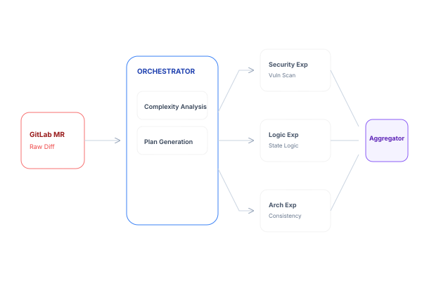
OpenClaw: Log Matrix & RAG Diagnostic Platform
AI Productivity & RAG
Challenge:
Diagnostic delays in complex firmware test logs (FAIL tests) often stall validation pipelines, where root causes are buried in megabytes of raw log data across disparate subsystems.
Solution:
Built a unified Log Matrix Pipeline integrating RAG (Retrieval-Augmented Generation). Optimized context ingestion by indexing the codebase to correlate log failures with actual implementation logic using semantic search.
Impact:
Significantly accelerated root-cause triage for platform blocks. Transformed raw log data into actionable diagnostic reports, enabling engineers to skip manual parsing and focus directly on resolution strategies.
RAG (Vector Indexing)
Log Pattern Analysis
FAIL Test Diagnosis
Automated Root-Cause
Python & TypeScript
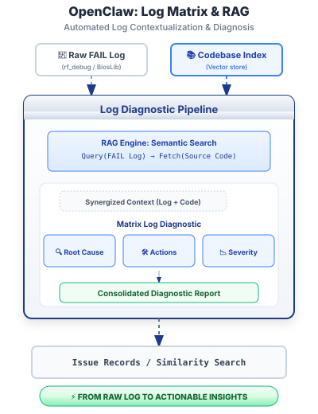
Jetson Orin BSP & Infrastructure Optimization
Embedded Systems & Performance
Challenge:
Legacy build scripts produced 5.2GB images, exceeding the storage limits for mass-production hardware. Peripheral pin-conflicts further stalled the BSP adaptation, creating a critical bottleneck for the project timeline.
Solution:
Led cross-functional debug sessions between HW and SW teams to resolve pinmux conflicts. I migrated the image compression to Zstd and implemented an automated build pipeline supporting multiple board variants.
Impact:
Reduced image footprint by 30% and improved OTA deployment speed by 40%. This workflow was adopted as the department's standard for all Orin-based projects, streamlining the migration for senior engineering teams.
Zstd Optimization
Device Tree (dtsi)
MassFlash / OTA
Kernel Tuning
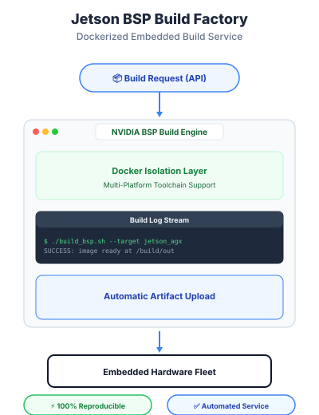
Test-Driven Infrastructure as Code (Ansible)
Infrastructure & Automation
Challenge:
Setting up VMs for stress tests was a total slog—it took 3 hours manually because machines kept "drifting" apart. We had constant syntax errors because tool versions didn't match between the dev boxes and the test hosts.
Solution:
I built a test-driven workflow using Molecule & Testinfra so we could validate everything in Docker first. I also forced strict version pinning for Ubuntu/CentOS to make sure every node stayed perfectly in sync.
Impact:
We cut that 3-hour setup time down to less than 5 minutes. Having 100% environment parity meant we stopped seeing those weird "works on my machine" bugs during scaling.
Ansible
Molecule
Testinfra
Docker
CI/CD
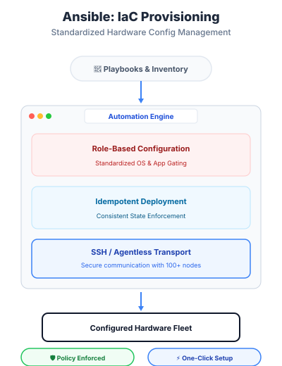
Unified Engineering Productivity Portal
Internal Tools & Full-Stack
Challenge:
I noticed the team was wasting way too much time jumping between 10+ different CLI tools and SSH windows just to check basic hardware status. It was a massive cognitive burden for everyone just to get started.
Solution:
I built a unified portal using Go and Angular to put everything in one place. I integrated a WebSocket terminal and GUI wrappers so we wouldn't have to keep memorizing cryptic Redfish/IPMI commands.
Impact:
Setting up a new debug session is 40% faster now. Junior engineers love the "One-Click Debugging" because it removes the steep learning curve for our complex hardware validation tasks.
Go (Gin)
Angular
WebSockets (Socket.io)
Redfish/IPMI API
Data Aggregation
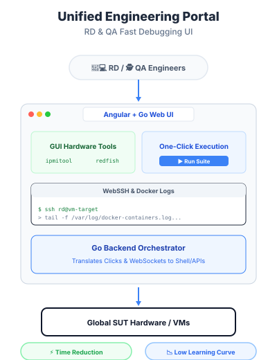
Firmware Configuration & NVRAM Persistence Validation
Systems Automation & Reliability
Challenge:
Validating BIOS settings (Boot Options, Setup configurations) across firmware updates.
Traditional UI-based testing was too slow and impossible to apply for In-Band flash
validation,
where the presentation layer is unavailable.
Solution:
Developed a UEFI Shell suite (EDK II/C) to directly manipulate NVRAM
variables.
Integrated an OOB (Out-of-Band) recovery flow via BMC Redfish to
automatically
re-flash and recover systems in case of flash failures, ensuring continuous test cycles.
Impact:
Automated 80% of regression cases. Enabled In-Band BIOS validation
that was previously un-testable via UI. Ensured configuration persistence
across hundreds of firmware update cycles, significantly improving release reliability.
UEFI Shell (C)
NVRAM Logic
BMC Redfish (OOB)
Self-Healing Test-bed
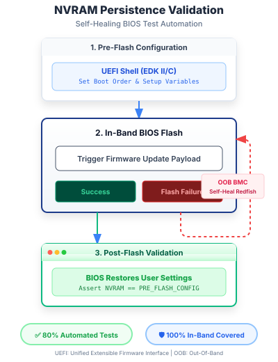
Cross-Interface Consistency Validation Framework
Systems QA & Architecture
Challenge:
Data discrepancies between legacy SMBIOS and modern Redfish
API
frequently caused validation failures. Manual cross-referencing across 3+ BMC generations
(AST2500/2600/OpenBMC) was inefficient and prone to human error.
Solution:
Built a modular Python framework using the Strategy Pattern to
decouple data retrieval from validation logic. Integrated Selenium for UI
scraping
and Redfish API for backend verification, enabling multi-layered
consistency checks (API vs. GUI vs. SMBIOS).
Impact:
Reduced end-to-end verification time by 90%. Established a unified quality
gate
that standardized data auditing across multiple vendor-specific BMC firmware,
identifying several field-critical data conversion bugs.
Python (Strategy Pattern)
Redfish (RESTful)
Selenium WebDriver
Data Reconciliation
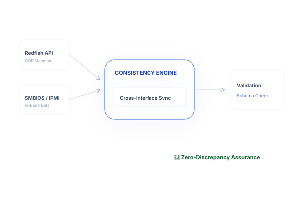
Deterministic BIOS OCR Engine
Computer Vision & Automation
Challenge:
Standard ML-based OCR (like Tesseract) only got about 85% accuracy on our low-res BIOS fonts. It didn't understand the layout at all, and for BIOS validation, even a tiny error could break our whole test suite.
Solution:
I decided to skip the AI hype and built a deterministic CV engine using OpenCV. I used template matching and custom row-grouping logic to make sure the spatial context stayed perfect every time.
Impact:
Pushed our accuracy to over 99% with almost zero latency. This completely freed up the QA team because we could finally automate visual regression testing without worrying about false positives.
OpenCV
Python / C++
Template Matching vs DL OCR
Spatial Layout Analysis
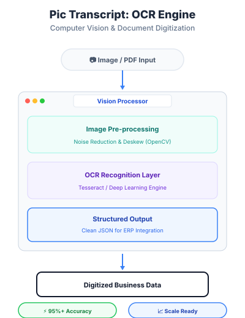
NVSSVT Enterprise Automation Platform
Platform Engineering & Orchestration
Challenge:
Observed a systemic ambiguity where 30+ engineers were blocked by fragmented CLI
tools,
preventing upstream CI/CD from connecting to hardware validation.
Solution:
Approached the problem with an architectural mindset, designing a Containerized
Orchestration Portal.
Decoupled the execution environment and defined a standard OpenAPI integration
layer,
forcing a transition from manual clicks to machine-to-machine automation.
Impact:
Resolved a major organizational bottleneck. The standard API layer and decoupled
architecture
cut task setup time by 80% (5-8 mins/task), establishing a scalable
foundation
for future hardware validation pipelines.
Go / Gin
OpenAPI (REST)
Jenkins Remote API
Distributed Systems

Cross-Platform Business Intelligence Engine
Data Engineering & Productivity
Challenge:
Leadership faced a data silo problem: issue tracking was fragmented across
Redmine, Excel, and Project Boards, obscuring "Issue Stagnation" and preventing
effective bottleneck identification.
Solution:
Developed a Laravel-based BI platform with an ETL pipeline to aggregate
multi-source data. Designed complex SQL analytics to compute "Unhealthy
Rates"
(stalled > 7 days) and implemented hierarchical reporting for tiered management visibility.
Impact:
Transformed fragmented logs into actionable KPIs. Identified 20%+ stalled
tickets previously invisible, leading to a significant reduction in Mean Time to Resolution
(MTTR)
and improved resource allocation efficiency.
Laravel / PHP
ETL Pipeline
SQL Optimization
Data Visualization

GitLab CI Automated Quality Gate
Developer Productivity & Governance
Challenge:
Manual code hygiene reviews were inconsistent and time-consuming.
Issues like non-standard commit history and missing changelogs led to
technical debt and difficult production audits.
Solution:
Created a modular CI pipeline using Dockerized runners to enforce
strict gates: Conventional Commits validation, automated Linting,
and Git rebase status checks. Built custom Python scripts to verify
synchronized updates between code and documentation.
Impact:
Automated 100% of code hygiene checks, reducing manual review cycles by
90%.
Guaranteed a clean and searchable Git history, enabling automated
release note generation and improving overall build stability.
GitLab CI
Conventional Commits
Docker
Python (Tooling)
Static Analysis
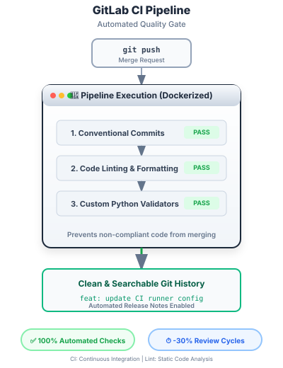
Secure CD & Automated Release Engineering
DevOps & Infrastructure
Challenge:
Our release process was pretty risky—we were manual-tagging and relying on shared SSH access to production. It lacked a proper audit trail, and human errors during versioning were common.
Solution:
I set up a GitLab CD pipeline that handles Semantic Versioning automatically based on changelogs. I also built a secure webhook agent to trigger updates, which allowed us to finally retire those old SSH keys.
Impact:
We reached a true "Zero-Touch" deployment flow, and releases now take just 3 minutes instead of 15. Every production change is now logged and standardized across our microservices.
GitLab CI/CD
Semantic Versioning
API-Driven Deploy
Security Hardening
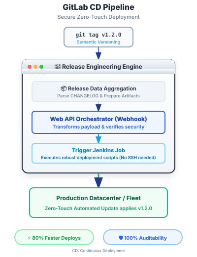
Offline-First Distributed System (Baby Tracker)
Distributed Systems & Mobile
Challenge:
Maintaining eventual consistency for caregivers logging activities
(feeding,
medical) in zero-connectivity environments. Managing concurrent updates across multiple
devices without data corruption was a critical Distributed System
challenge.
Solution:
Implemented an Offline-First architecture using WatermelonDB. Implemented a
custom sync engine with Optimistic Locking (versioning) and Redis
Hybrid Locks to handle high-concurrency race conditions.
Impact:
Achieved 100% perceived uptime with Optimistic UI. Successfully
synchronized 1,000+ records with zero data loss, resolving conflicts via
"Last-Write-Wins" and strict schema validation.
React Native
Offline-First
Optimistic Locking
Distributed Locks
Eventual Consistency
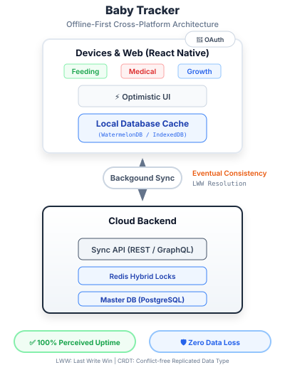